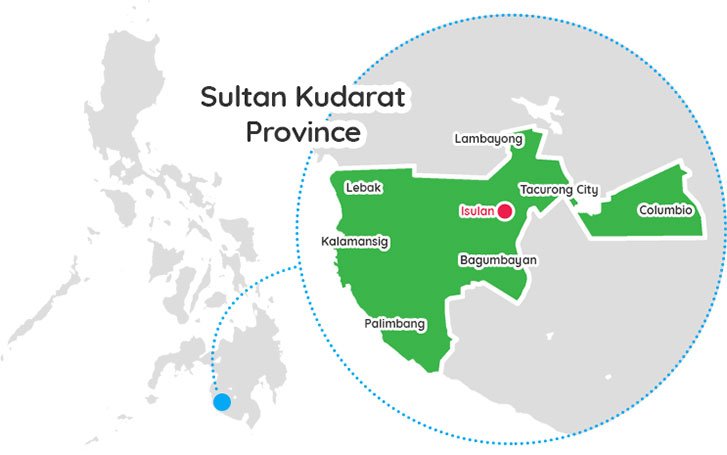

The Land of Sultan Kudarat
Sultan Kudarat is located in the southwestern part of central Mindanao. It is surrounded by Maguindanao del Norte, Maguindanao del Sur, Cotabato, South Cotabato, Sarangani, Davao del Sur, and the Moro Gulf and Celebes Sea.
The province features mountain ranges such as the Alip and Daguma Mountain Ranges. The western coast faces the Celebes Sea, with a coastline of about 132 kilometers.
Sultan Kudarat experiences a Type IV climate with evenly distributed rainfall. It is generally outside the typhoon belt, with an average temperature of around 35°C.
Composed of 11 municipalities and one city (Tacurong). The provincial capital is Isulan. Altogether, the province is divided into 249 barangays.
Quick Facts: